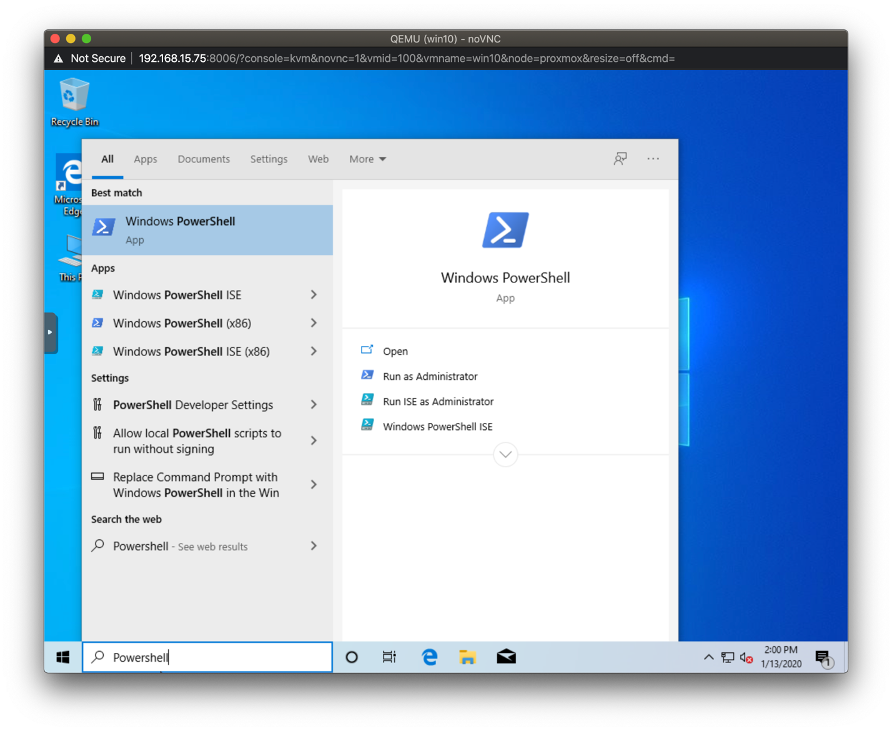
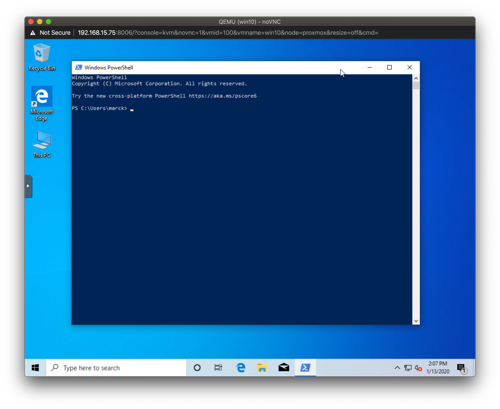
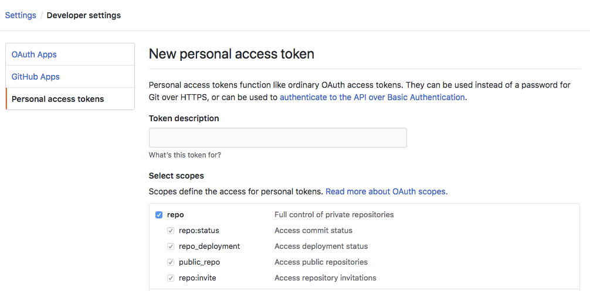
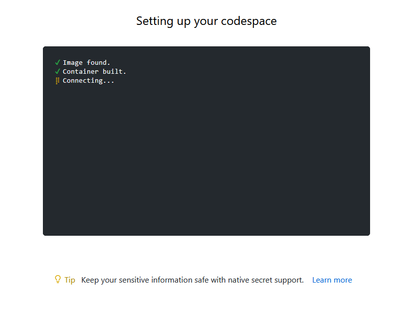
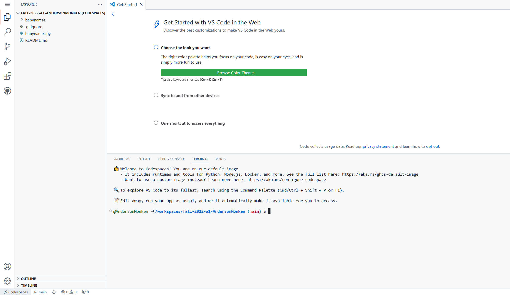

Lab 1
DSAN 6000 Fall 2024
Make sure that you are connected to the Saxanet WiFi network and not the GuestNet network. SSH (TCP port 22) is blocked on GuesNet which means if you are on GuesNet you wil not be able to connect to your cloud VMs or clone repos from GitHub via SSH. Use SaxaNet. #
Overview
Goals
- Creating your public/private ssh key pair and knowing where to find the files
- Learning to use GitHub Codespaces IDE
- Learning the Linux Shell
- BASH Exercise
Terminal Setup
We will be using the Terminal in many tasks in this course. By “Terminal”, we mean a command-line terminal, where you will use it to type instructions and connect to your remote resources.
When we say “terminal” in this course, it means that you need to open up the terminal application for your respective operating system. The terminal is a “local” application, meaning it is running on your “local” machine (your laptop.)
Windows Users
Windows users will be using the Windows Powershell: <https://docs.microsoft.com/en-us/windows-server/administration/windows-commands/powershell>
Windows Powershell is most likely installed if you have Windows 10. If you don’t have Powershell, take a look at this article: https://www.howtogeek.com/336775/how-to-enable-and-use-windows-10s-built-in-ssh-commands/ that explains how to install it.
You can find Powershell by typing “Powershell” into the search bar:

Once Powershell is running, this is your terminal:

Additional Powershell Configuration (you must do this!)
You need to perform this step **only once** to be able to use agent forwarding which is explained further in the lab.
Exit Powershell if running
Start a new Powershell session using run as Administrator
Enter the following command (you can cut/paste from here):
Get-Service -Name ssh-agent | Set-Service -StartupType Manual- Exit Powershell. You should not need to run as administrator going forward.
Mac and Linux Users
For Mac and Linux users, you will open up the Terminal.
Macs and Linux have a built in Terminal.
Or, you can use iTerm app: <https://www.iterm2.com/>
If you are on Linux (but not on Mac), you can open the terminal by using Ctrl-Alt-T.
SSH Keypair Setup
When you want to connect to a remote machine, the method is called “Secure Shell”. This creates a connection between the local machine (where your terminal window lives) and the “remote” machine (where the commands you will send actually execute). In order for the local and remote machines to authenticate (trust) each other, we have to create a special password-like files called a keypair. It is called a keypair because there is a public version and a private version. Read more about SSH Keys here.
NOTE: You only need to create your ssh public/private keypair one time only. If you already have a public/private keypair on your laptop let us know.
Open a terminal (on your laptop) if not already open. By default, every time you open a terminal it will open in your home directory.
At the command prompt run the following command:
ssh-keygen -t rsa -b 2048and press enterYou will see this prompt, just press enter
Generating public/private rsa key pair.
Enter file in which to save the key (/home/User/.ssh/id_rsa):- You will see this prompt, just press enter
Created directory '/home/User/.ssh'.
Enter passphrase (empty for no passphrase):- You will see this prompt, just press enter
Enter same passphrase again:- You will see these messages (your randomart will look different) and your keypair has been created.
Your identification has been saved in /home/User_name/.ssh/id_rsa.
Your public key has been saved in /home/User_name/.ssh/id_rsa.pub.
The key fingerprint is:
SHA256:xPJtMLmJSO73x/NQo3qMpqF6r6St4ONmshS8QZqfmHA User_name@WinDev1802Eval
The key's randomart image is:
+---[RSA 2048]----+
| |
| . . |
| . . . * |
|+. o . = * |
|++E o . S o o |
|.=+o . o . |
|+oo o o +o |
|+= +.o oo.*. |
|*+=++ooooo o. |
+----[SHA256]-----+See your key files
Open a terminal if not already open
Change to your .ssh directory
- This is a hidden directory so if you list your files using ls you won’t see it. For seeing all files, use ls -la.
- To change into the .ssh directory type
cd .ssh
Type
pwdto print your current working directory.- Windows users in Powershell will see:
PS C:\\Users\\your_name\.ssh> pwd Path ---- C:\\Users\\your_name\.ssh PS C:\\Users\\your_name\.ssh>- Mac users will see:
pwd /Users/myusername/.ssh- Linux users will see:
\$ pwd /home/myusername/.ssh
Next, we need to open the new key file we just made.
Type
lsto list the files in the directory.- What is displayed may look different. You will not have a config file unless you have already created one.
Type
ls -lato list all the files in the directory, even the hidden ones.- What is displayed may look different. You will not have a config file unless you have already created one.
Get your public key info
The file id_rsa is your private key and this file will not leave your computer.
The file id_rsa.pub is the public key, whose contents we will upload to cloud services so you authenticate.
The known_hosts is a file that gets generated as you connect to different remote systems.
- This is useful so you know you are connecting to the same server as previous times.
\$ ls -la
total 32
drwxr-xr-x 6 your_name staff 192 May 29 20:39 .
drwxr-xr-x+ 75 your_name staff 2400 May 30 13:35 ..
-rw-r--r-- 1 your_name staff 181 May 29 15:50 config
-r-------- 1 your_name staff 3243 May 29 15:50 id_rsa
-rw-r--r-- 1 your_name staff 742 May 29 15:50 id_rsa.pub
-rw-r--r-- 1 your_name staff 363 May 29 20:42 known_hostsView the contents of your public_key file by running the command
cat id_rsa.pub- What is shown is a sample public key, yours will be different
\$ cat id_rsa.pub
ssh-rsa AAAAB3NzaC1yc2EAAAADAQABAAABAQCnKuIRXwZu0JZH0/Q2XNrYYTaJT7bMtXGhGQaSSOZs6MhQ4SkSbHiygO7RauQf741buLnASzY27GKMMMml6InwfxJWrF60KhNK0r869POQkuZa9v9/cmYcEIzmAJe1xRPABEZ2yfbTG9Wq4sg9cU0mwt1Bx7wiN4QNf0Bak62EC8JWTbcKLduuzO1zabIb5xW9gfR9b4K3HwmqRLl18S8bNsfYQZfvtlwd0mCWQUeuEGbDOgqh//nLIj6DeXdyxbD5xrz79iOAuAK2nXAjNCEtKpxNGQr2Py7aWQjlH+U5laDEHVg4hzmBY7yoZ5eC3Ye45yPqpQA1y8JrbXVhPJRP User\@WinDev1802EvalExtracting your public key
Open a text editor(Notepad on Windows or Textpad on Mac, NOT MICROSOFT WORD) and select the output of your terminal with all the text from the ssh-rsa beginning all the way to the end, and paste it in your text editor as-is. We will use this in the next step.- You can also just copy/paste from your terminal screen.
- On a Mac, you can also copy the contents of the id_rsa.pub file using
pbcopy < id_rsa.pubGitHub Setup
Adding SSH Key to GitHub
a) Create a GitHub Account if you do not already have one
Go to www.github.com to create a GitHub account if you do not already have one. Your username has to be globally unique, and the email address you use to register GitHub can be any email address you own.
b) Upload your Public key to GitHub
- Log into to your GitHub account if you are not already logged in
- Click on your profile icon on the top-right of the screen and select Settings from the dropdown
- Click on SSH and GPG keys from the left hand menu
- Click on the New SSH key button on the top-right
- Give your key a name. This is just a name and is meaningful to you.
- Paste the contents of the public key in the Key box. Leave the “Key Type” dropdown as “Authentication Key”.
- Click the Add SSH Key button
c) Test that your ssh key works with GitHub
- Open a terminal if not already open on your laptop
- At the command prompt, type
ssh -T git@github.comand press enter to test. If it works, you will see something like this, with your GitHub username:
The authenticity of host 'github.com (192.30.253.112)' can't be established.
RSA key fingerprint is SHA256:nThbg6kXUpJWGl7E1IGOCspRomTxdCARLviKw6E5SY8.
Are you sure you want to continue connecting (yes/no)? yes
Warning: Permanently added 'github.com,192.30.253.112' (RSA) to the list of known hosts.
Hi wahalulu! You've successfully authenticated, but GitHub does not provide shell access.You are now ready to use ssh authentication with GitHub.
Create a Personal Access Token on GitHub
- Log into to your GitHub account if you are not already logged in
- Click on your profile icon on the top-right of the screen and select Settings from the dropdown
- Click Developer settings
- Click the Personal access tokens tab
- Click the Generate new token button
- Enter a token description (you can call it
big-data-class) - Select the repo permission, and then click the Generate token button

- Copy the token and save it in a text file. You will need this token later on in the semester and if you lose it you will need to re-generate a token
GitHub Codespaces IDE
Codespaces is an integrated developer environment (IDE), which provides you with a VS Code environment with a cloud computing backend. The repository is automatically loaded into your environment and you do not need any additional authentication steps to push to your repo. Read more here about Codespaces.
In this lab, we use Codespaces to get you familiar with the Linux terminal.
You will not use Codespaces for most of your work this semester. If you were just exploring code or making minor changes to a project, Codespaces could be a simple solution.
Launching Codespaces
Open your Git repo for the lab. Launch Codespaces from your repo by clicking on the green code button, then select “codespaces” then click “Create codespace on main”.

Wait for the workspace to be created. It will set up the computing instance with a screen like this.

Linux Terminal in Codespaces
You now have full VS Code capabilities. The terminal in Cloud9 is the lower window. You are connected to a cloud computing instance and are able to run BASH commands (along with other programming languages) there.

Check out the cheat sheet on Linux commands here.
BASH Walkthrough
The instructor will walk through slides and code live to demonstrate basic Linux commands.
BASH Exercise
Go to Codespaces and complete the BASH Exercise that is located in the Readme.